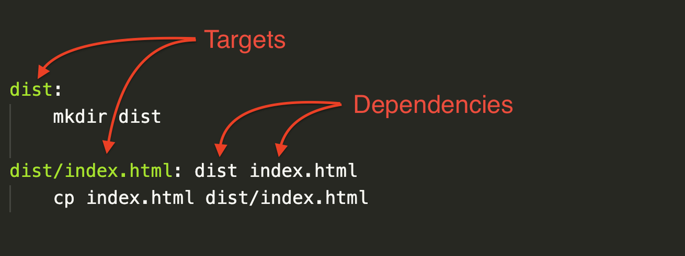

Digesting Make and Makefiles
Make and its makefiles, are a fantastic tool to keep track of the commands needed to build or run an application. I have recently done a big refactor for a project, where we make heavy use of Make, and decided to write this small piece about Make.
Just create a Makefile at the root of your project, start adding commands, and done... right? Not really.
Let's explore a bit more what I mean, and then try to build a mental model that matches reality a bit better, closing with some magic you can do with Makefiles.
Set up a practice field by running in the terminal:
mkdir /tmp/practice
cd /tmp/practice
touch index.html
And write a minimal Makefile with your favourite editor (E.g: vim Makefile)
build: mkdir dist cp index.html dist/index.html
Then execute in your terminal:
make build
This will create a folder dist, and copy index.html into the folder dist.
This is good. Particularly for me, it documents the commands used by the project, and helps future me.
Let's refactor a bit, to show some extra functionality:
dist: mkdir dist build: dist cp index.html dist/index.html
Notice the build: dist, it means: call dist command before running build
make build
The functionality remains the same.
Recap
We created two commands:
buildanddist.And
distis executed by thebuildbefore running itself.
This is ok, but it's not necessary a correct mental model. In the Makefile world, commands are not commands... but files.
New mental model
In a nutshell, make builds a dependency graph of files and folders.
-
buildanddistare actually target files (or folders). - doing
build: distmeans thatbuilddepends ondistexisting first.
If we had a file called build , doing make build, wouldn't execute anything.
touch build make build $ make: `build' is up to date.
If we want to actually treat build as a command, we have to add .PHONY.
dist: mkdir dist .PHONY: build build: dist cp index.html dist/index.html
This way Make no longer sees build as a file, but instead as a recipe, and it will be
executed everytime.
Back to targets
Remember what we said about targets and dependency graph? No? Me neither. Don't worry, I actually didn't say anything.
If you treat your targets as files, Make can keep track of the files that have changed, and update only those.
By knowing this our previous example could be refactored into:
dist: mkdir dist dist/index.html: dist cp index.html dist/index.html
And now we tell Make to create our target file:
make dist/index.html
If we run multiple times, we get:
make: `dist/index.html' is up to date.
We would expect that by modifying index.html, and running make dist/index.html, it would be rebuilt,
but we are getting the same message.
Dependencies
We need to tell Make that it depends on another file: index.html
dist: mkdir dist dist/index.html: dist index.html cp index.html dist/index.html
This time, if index.html is modified, make dist/index.html will run again.
Thus, when dependecies are updated, target files are recreated.

Patterns
Now let's say we have many html files
touch about.html privacy.html docs.html
And we want to do the same for all the files, without creating many commands in Make.
For this case we use a pattern (%), and some Make variables:
-
$@: the target file -
$<: the input file
dist: mkdir dist dist/%.html: %.html dist cp $< $@
make dist/about.html
And we would be explicitly telling Make which file to create.
But what if we want to copy all the files at the same time?
Our current implementation, doesn't know about the available files.
And we are providing the about to the make dist/about.html.
We have to find a way to "know" all the possible targets.
Variables
We are gonna find the source files (*.html files which are not in the dist folder), store in a variable,
and then use that information to create the target html files.
SRC_HTMLS := $(shell find . -name '*.html' -depth 1) TARGET_HTMLS := $(SRC_HTMLS:./%.html=dist/%.html) .PHONY: build build: $(TARGET_HTMLS) $(info Done) dist: mkdir dist dist/%.html: %.html dist cp $< $@
make build
What happens is:
-
buildhas all theTARGET_HTMLSfiles as dependency - Make also sees
dist/%.htmland the pattern will fit the criteria for eachTARGET_HTMLS - In
dist/%.htmlwe have as dependency the%.html, so Make takes the pattern and checks if a%.htmlfile exist - If the conditions are met, it runs the
cpcommand for each file, unless they are already present and not updated
You can think of
build: $(TARGET_HTMLS)
As
build: dist/index.html dist/about.html dist/docs.html dist/privacy.html
Variables can be reference using $() or ${}.
We also use $(info Done) to send information messages to the user.
Make also provides $(warning text…) for warnings, and
$(error text...) to exit earlier with an error code different than 0.
See Make-Control-Functions
One more time
Let's start over by removing the dist folder, and see what happens
rm -rf dist
❯ make build mkdir dist cp index.html dist/index.html cp about.html dist/about.html cp docs.html dist/docs.html cp privacy.html dist/privacy.html Done ❯ make build Done make: Nothing to be done for `build'.
As you can see, files that have not changed, won't be rebuilt by Make.
Now, try using touch on the different html files and running make build to see what happens.
More functionality
Make is a powerful tool, and provides much more functionality, so far with the web stack I haven't had the need for more complexity.
I usually wrap docker commands, and make use of different variables, but if the need arises, make has extra functionality, life:
- functions
- if/conditions
- change the shell in which the commands are executed
.delete_on_error
Notes
Make is usually a good way to keep track of a project's commands, as it's available in Unix systems,
and you can be up and running fast.
But by no means is perfect, it can sometimes be hard to read, or use.
It's not available on Windows. And because it was designed for the C,C++ era, it plays well with files,
but it doesn't mean it fits perfectly the web development paradigm, where you don't "transform" files much
and where docker is used a lot.
So depending on your situation, there are some popular alternatives:
- just: modern approach to make written in rust
- earthly.dev: repeatable builds based on docker
- bazel: build tool from Google
- scripts-to-rule-them-all: just use scripts, like starlette
Resources
Thanks for reading! 👋
If you are interested in what I write, follow me on twitter